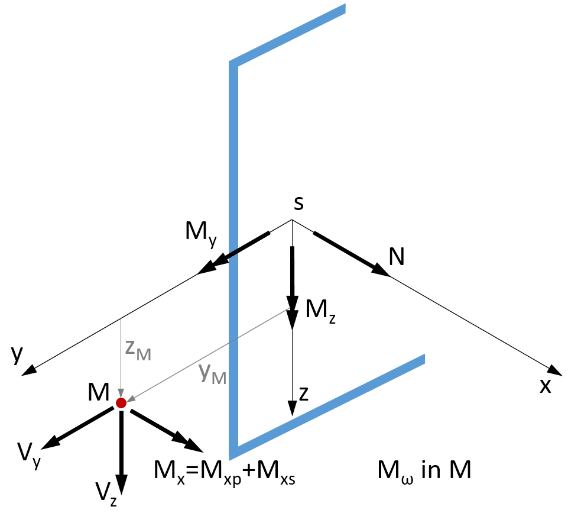
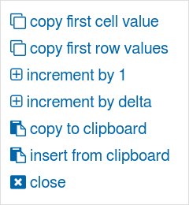
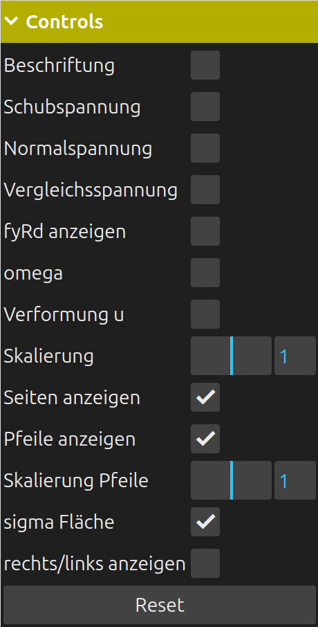
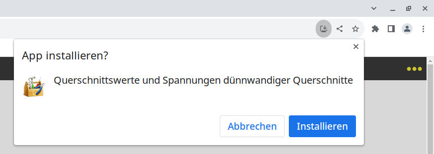

Sign definitions of an element
Sign definitions of an elementÜbersicht
Koordinatensystem und Vorzeichen
Beispiel
Hinweise zur Bedienung der App
Bezeichnungen
Voreinstellungen
Installation als App auf dem Desktop
Kompatibilität
Hilfe: Meine Tastatur hat keine Minus-Taste, virtuelle Tastatur
With this web application, cross-section values and stresses of thin-walled cross-sections can be calculated. The centerline model (wire model) is applied and the finite element method is used for the solution [1], [2]. The cross-section is described similarly to a beam or truss by several straight elements connected by nodes. The theory requires that each element must have at least one connection to another element. Thus, no elements may be "alone" in the cross section. This means that there must be a path from each element to all other elements. The node coordinates are entered in a ȳ-z̄ auxiliary coordinate system whose origin can be selected as desired. The elements have a start and end node and can accurately represent quadratic shear stress curves. Therefore, no refinement is required. The direction of the shear stresses is indicated by arrows in the quarter points of the elements on the right and left sides. If you look mentally from the element start to the element end, the right side of the element is at the right hand. Since the elements may have different material properties, reference values must be specified. These must also be used as material data in a member program if the calculated ideal cross-section values are used for a member cross-section. The normal stresses due to N, My and Mz are calculated with the usual formulas of mechanics assuming that the cross-sections remain plane according to Bernoulli. The shear stresses are positive if they act in the direction of the local coordinate system of the element. The positive local direction points from the initial to the final node of the element.
Features of the program:
The cross section can be asymmetrical, open and/or closed
Linear elastic material
The width of the elements is constant element by element
Each element has its own material properties
Calculation of all cross-section values
Stress calculation due to normal and shear forces N, Vy and
Vz,
Bending moments My and Mz,
primary and secondary torsion Mxp , Mxs
and camber moment Mω.
The cross-section is displayed in the y-z plane and in a 3D view. The shear stresses are drawn parallel to the x-axis over the element thickness.

Sign of the internal forces
Sign definitions of an element
Dieses Beispiel wurde in [2] behandelt. Die Querschnittsdaten wurden beim Programmstart automatisch geladen.

Schnittgrößen:
Mxp = 250 kNm; Mxs = 150 kNm; Mω = 10 kNm²
Vy = 1000 kN; Vz = 500 kN
Material:
E = 21.000 kN/cm²; ν = 0,3
The decimal separator is the comma or the point. A thousands separator is not permitted. In order to speed up the node and element input, individual cell values or rows of the tables can be copied or generated. A block can be selected by pressing the left mouse button. After releasing the mouse button a context menu appears. For touch screens: When entering with the finger or pen, the selection mode must first be activated by clicking the checkbox above a table. When crossing over with the finger or the pen, the selected cells are then highlighted in color, as with the mouse. After lifting the finger/pen the context menu appears. No values can be entered during the selection mode.

Context menu
Bei iOS erfolgt die Auswahl im Kontextmenü mit einem Doppelklick.
Hinweis: An jedes Tablett und Smartphone läßt sich eine Bluetooth Maus und/oder Tastatur anschließen.
Um den begrenzten Bildschirmplatz auf Smartphones und Tabletts besser zu nutzen, werden die Anzahl der Zeilen in den Tabellen für die Knotenkoordinaten und Elemente durch die Eingabe der Anzahl Knoten und Elemente bestimmt. Deshalb sind erst die neue Anzahl Elemente und Knoten einzugeben und dann die Größe der Tabellen mit Hilfe des Buttons 'resize Tabellen' zu änden. Der Vorgang kann beliebig oft wiederholt werden.
Die Darstellungsoptionen können beliebig kombiniert werden.

Controls
Knoten-Inzidenzen der Elemente
nod1 = Knoten-Inzidenz am Elementanfang
nod2 = Knoten-Inzidenz am Elementende
Ageom = geometrische Querschnittsfläche, Fläche ohne Berücksichtigung der Materialdaten.
Schubspannungen aus primärer Torsion Mxp:
τxs0,L = Schubspannung aus Anteil offener Querschnitt, linke Seite, linearer Verlauf über
Elementbreite
τxs0,R = Schubspannung aus Anteil offener Querschnitt, rechte Seite
τxs1 = Schubspannung aus Anteil geschlossener Querschnitt, konstant über Elementbreite
Schubspannungen aus Querkraft und sekundärer Torsion Mxs:
τxsa = Schubspannung am Elementanfang a
τxsm = Schubspannung in Elementmitte m
τxse = Schubspannung am Elementende e, alle Spannungen konstant über Elementbreite
Alle anderen Bezeichnungen analog.
In the ꔷꔷꔷ points menu, among other things, the unit of length can be set. The unit for the stress is adjusted: mm → N/mm² ; cm → kN/cm² ; m → MN/m² . The newly set unit is immediately transferred to the input page. Afterwards, a recalculation must still be performed so that the units of the results are adjusted. Furthermore, the font size and the table color can be set. The settings of the page can be saved as a presetting in the local memory of the used browser and are available again after a program restart. The presets can be deleted with the button below. The local storage is not a cookie. This web application performs all calculations on the local computer in the browser in JavaScript. No data is exchanged with a web server. Therefore, after starting the program, a network connection is no longer required.
The 'Wide browser window' option is only interesting for very wide screens and when the browser is operated in fullscreen mode. Then the output width of the application can be reduced. The area will be centered.
This application is programmed as a web application (Web App) so that it can be installed on the desktop under all operating systems. For this purpose, an icon is created on the desktop. This makes the app behave like an app installed from a store. DuennQs will still run in the installed browser, of course, but without controls such as the address bar. The installation process differs depending on the operating system, version, and browser. After duennQs has been started in the browser for the first time, on Android in the Chrome browser, select 'Install App' from the application menu (three-dot menu) at the top right. A dialog appears, which must be confirmed. After that, the browser can be closed. There is now a new icon on the desktop called DuennQs.
Für die Installation unter iOS ist der Safari Browser zu verwenden. Hier heißt der Befehl 'Zum Home-Bildschirm' mit einem Addieren-Symbol
Die Installation unter Microsoft Windows ist ähnlich der Installation unter Android. Im Edge Browser steht
folgender Abschnitt im Anwendungsmenü (Drei-Punkte-Menü)

Bei neueren Chrome Versionen werden Sie unter Umständen direkt gefragt, ob eine Installation gewünscht wird,
siehe Symbol rechts in der Adressleiste :

Unter macOS ist der Microsoft Edge or Google Chrome Browser zur Installation zu verwenden.
Der Firefox Browser unterstützt die Installation zur Zeit noch nicht.
Unter den PC-Betriebsystemen Microsoft Windows und Linux kann alternativ mit der F11-Taste in den Vollbildmodus
umgeschaltet werden.
Eine Deinstallation erfolgt durch einfaches Löschen des Icons auf dem Desktop.
Es wurden folgenden Betriebssysteme getestet: Windows 10↑, macOS Catalina 10.15.7↑, Ubuntu 22.04↑, Android 9-13, iOS 15.7.3↑.
Es wurden folgende Browser in der aktuellsten Version getestet: Chrome, Chromium, Edge, Safari, Firefox. Nur die aktuellen Versionen werden getestet und unterstützt.
Probleme: Unter Android Firefox funktioniert die Selektion der Zellen in den Tabellen nicht.
On some Android devices, especially from Samsung, the numeric keyboard does not include a key for a negative sign. Unfortunately, the HTML specification leaves it up to the device manufacturer whether the numeric keyboard contains a key for the negative sign. Judging from the many Internet entries, the deeper meaning behind this is probably only clear to a few people. In these cases, it is recommended to install an additional virtual keyboard. For example, the original Google Android keyboard Gboard from the Play Store is an alternative. The keyboard still has to be activated after the installation. It is best to do this right away in the Play Store. Later, you can always switch between the installed keyboards (icon at the bottom right of the keyboard).
[1] Matthias Kraus: Computerorientierte Berechnungsmethoden für beliebige Stabquerschnitte des Stahlbaus, Dissertation, Bochum 2005
[2] Matthias Kraus; Rolf Kindmann: Finite-Elemente-Methoden im Stahlbau, 2.Auflage, Ernst W. & Sohn Verlag, 2019